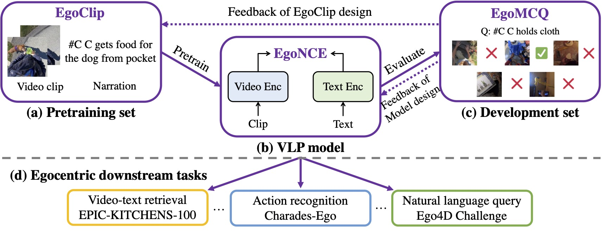
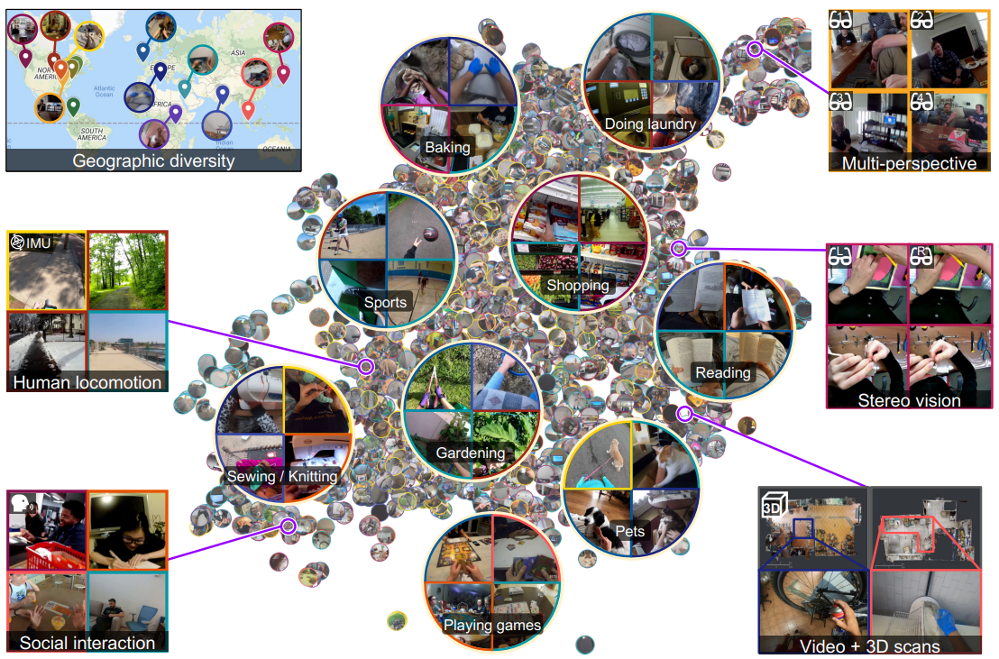
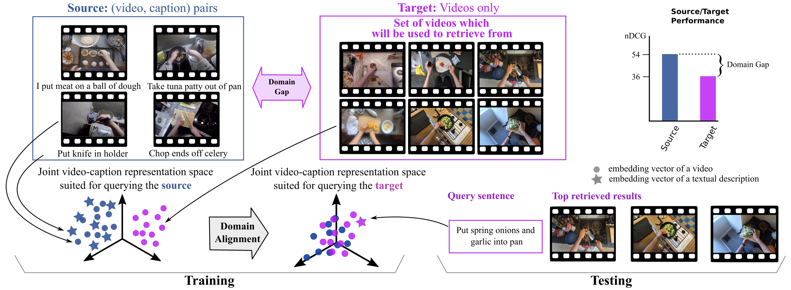
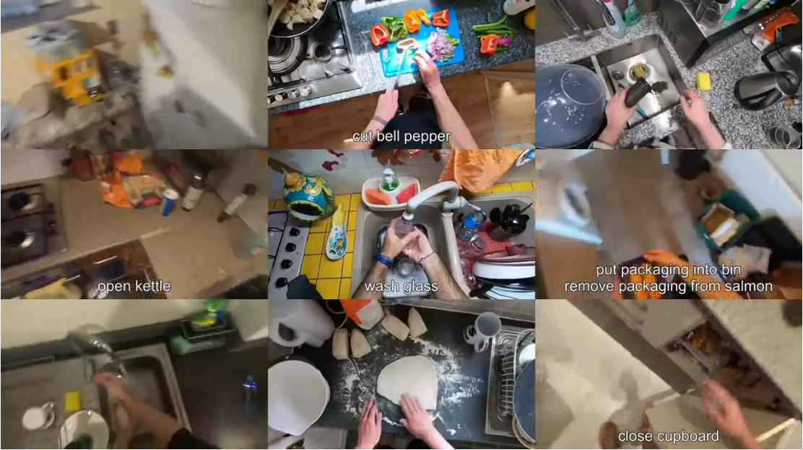
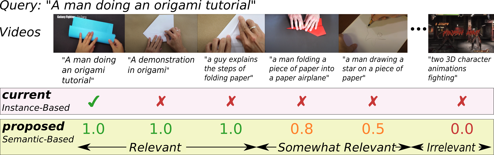
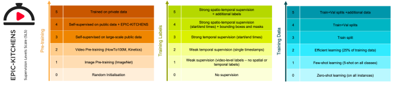

Michael Wray
Lecturer of Computer Vision
I am a lecturer of Computer Vision at the Department of Computer Science at the University of Bristol. My research interests are in multi-modal video understanding, particularly for egocentric videos — focusing on how both vision and language can be tied together towards tasks such as cross-modal retrieval, grounding and captioning.
Email: michael (dot) wray (at) bristol (dot) ac (dot) uk
News
- July 2022 - BMVA Summer School Lecture on Egocentric Vision - I presented a lecture on Egocentric Vision at the BMVA Summer School at UEA. A copy of the slides can be found here.
- June 2022 - Research Lecture @ University of Catania - I presented a lecture on my research at the University of Catania.
- June 2022 - Russell Group Teacher Conference Keynote - I gave the opening keynote at the Russell Group teacher conference about my journey from PhD student to lecturer.
- March 2022 - Paper at CVPR2022 Accepted - Our paper "Ego4D: Around the World in 3,000 Hours of Egocentric Video" was accepted at CVPR2022.
- March 2022 - Lecturer Position - I joined the Department of Computer Science as a Lecturer in Computer Vision.
- December 2021 - Workshop at CVPR2022 Accepted - Joint Ego4D & EPIC Workshop@CVPR 2022 accepted, website.
- October 2021 - Paper Accepted at IJCV - Rescaling Egocentric Vision has been accepted to IJCV, find more information here.
- August 2021 - Outstanding Reviewer at ICCV 2021
For a full list of News, click here.
Research
Short list of Research projects, click here for a full list.
|  |
Egocentric Video-Language Pretraining
Kevin Qinghong Lin, Alex Jinpeng Wang, Mattia Soldan, Michael Wray, Rui Yan, Eric Zhongcong Xu, Difei Gao, Rongcheng Tu, Wenzhe Zhao, Weijie Kong, Chengfei Cai, Hongfa Wang, Dima Damen, Bernard Ghanem, Wei Liu, Mike Zheng Shou ArXiv, 2022 [Webpage] [arXiv] [Code] |
 |
Ego4D: Around the World in 3,000 Hours of Egocentric Video
Kristen Grauman, Andrew Westbury, Eugene Byrne, Zachary Chavis, Antonino Furnari, Rohit Girdhar, Jackson Hamburger, Hao Jiang, Miao Liu, Xingyu Liu, Miguel Martin, Tushar Nagarajan, Ilija Radosavovic, Santhosh Kumar Ramakrishnan, Fiona Ryan, Jayant Sharma, Michael Wray, Mengmeng Xu, Eric Zhongcong Xu, Chen Zhao, Siddhant Bansal, Dhruv Batra, Vincent Cartillier, Sean Crane, Tien Do, Morrie Doulaty, Akshay Erapalli, Christoph Feichtenhofer, Adriano Fragomeni, Qichen Fu, Christian Fuegen, Abrham Gebreselasie, Cristina Gonzalez, James Hillis, Xuhua Huang, Yifei Huang, Wenqi Jia, Weslie Khoo, Jachym Kolar, Satwik Kottur, Anurag Kumar, Federico Landini, Chao Li, Yanghao Li, Zhenqiang Li, Karttikeya Mangalam, Raghava Modhugu, Jonathan Munro, Tullie Murrell, Takumi Nishiyasu, Will Price, Paola Ruiz Puentes, Merey Ramazanova, Leda Sari, Kiran Somasundaram, Audrey Southerland, Yusuke Sugano, Ruijie Tao, Minh Vo, Yuchen Wang, Xindi Wu, Takuma Yagi, Yunyi Zhu, Pablo Arbelaez, David Crandall, Dima Damen, Giovanni Maria Farinella, Bernard Ghanem, Vamsi Krishna Ithapu, C. V. Jawahar, Hanbyul Joo, Kris Kitani, Haizhou Li, Richard Newcombe, Aude Oliva, Hyun Soo Park, James M. Rehg, Yoichi Sato, Jianbo Shi, Mike Zheng Shou, Antonio Torralba, Lorenzo Torresani, Mingfei Yan, and Jitendra Malik IEEE/CVF Computer Vision and Pattern Recognition (CVPR) 2022 [Webpage] [arXiv] [Dataset] |
 |
Domain Adaptation in Multi-View Embedding for Cross-Modal Video Retrieval
Jonathan Munro, Michael Wray, Diane Larlus, Gabriela Csurka, Dima Damen ArXiv, 2021 [arXiv] |
 |
Rescaling Egocentric Vision
Dima Damen, Hazel Doughty, Giovanni Maria Farinella, Antonino Furnari, Jian Ma, Evangelos Kazakos, Davide Moltisanti, Jonathan Munro, Toby Perrett, Will Price, and Michael Wray Springer International Journal of Computer Vision (IJCV), 2021 [Webpage] [Dataset] |
 |
On Semantic Similarity in Video Retrieval
Michael Wray, Hazel Doughty, and Dima Damen IEEE Conference on Computer Vision and Pattern Recognition, 2021. [Webpage] [arXiv] [Code] [pdf] |
 |
Supervision Level Scales
Dima Damen, Michael Wray arXiv, 2020 [arXiv] |
For a full list of Research projects, click here.
Short Bio
Michael is a lecturer in Computer Vision at the Computer Science Department at the University of Bristol. He finished his PhD titled "Verbs and Me: an Investigation into Verbs as Labels for Action Recognition in Video Understanding" in 2019 under the supervision of Professor Dima Damen. After, he stayed in the same lab as a Post-Doc working on Vision and Language and the collection of the Ego4D Dataset. Michael has led the organisation EPIC workshop series from 2021 onwards, is an organiser of the Ego4D workshop series, and is an ELLIS member.People
Current
- Adriano Fragomeni: PhD, 2020–Current
- Kevin Flanagan: PhD, 2021–Current
Previous
- Benjamin Gutierrez Serafin: MSc, 2020
- Pei Huang: MSc, 2016
Misc.
Workshop Organiser
Outstanding Reviewer
- ICCV2021
- CVPR2021
- BMVC2020